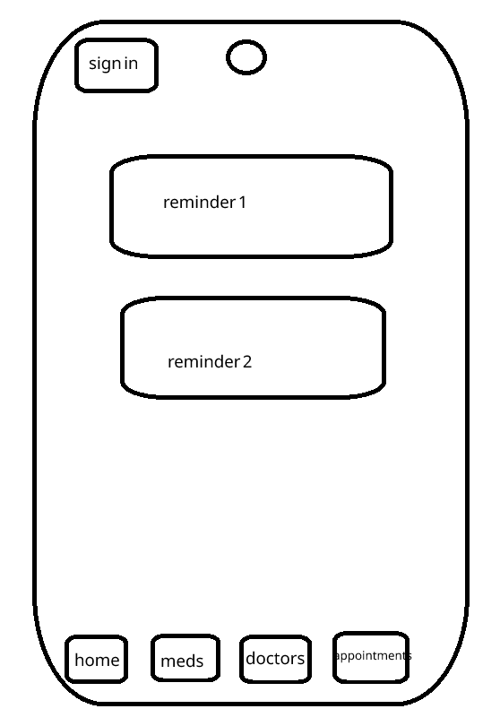
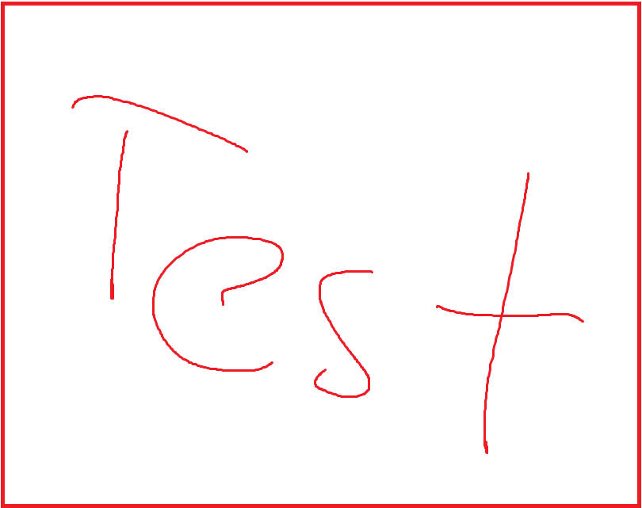
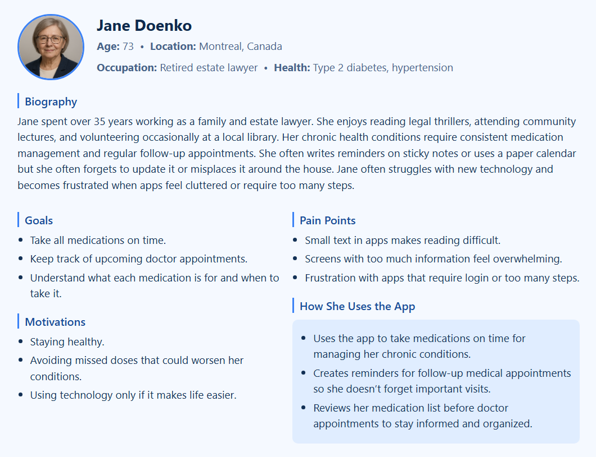
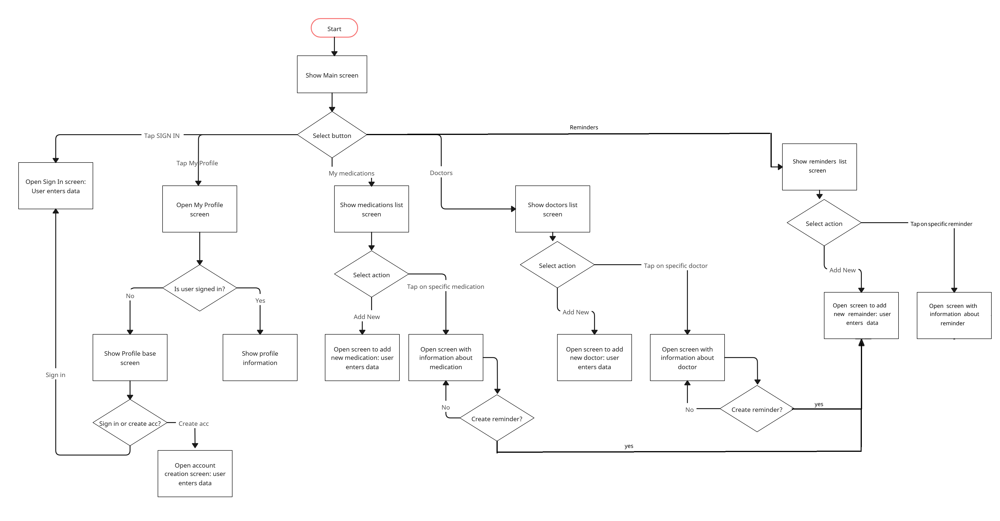

Figure 6. Design of the main screen in iteration 1

Figure 7. Design of the main screen in final iteration
Andrii Branytskyi • February 20, 2026
The purpose of this case study is to go through the UX/UI design process for the Health Companion Super App and develop a user experience strategy. To better understand how the app should function and what problems it must solve, I conducted research, created personas and mapped their user journeys, and iterated through several versions of the sketches and wireframes. Then I developed the prototype and defined a usability testing plan to later collect feedback for farther analysis.
The Health Companion Super App is being developed to help individuals with chronic health conditions to manage their medications and doctor appointments. This mobile app should support certain core functionalities such as organizing and tracking the medications, communicating with healthcare professionals and easily setting reminders to notify users about upcoming medical appointments and when to take medications.
The target users of the Health Companion Super App are individuals who take medications regularly due to chronic conditions or other possible reasons. Depending on the medication, such as vitamins, don’t have strict rules when to be taken, while others must be taken at strict times and in precise doses. Also, sometimes users need to schedule follow‑up appointments to monitor their progress or adjust treatment plans.
Therefore, the main challenge is the difficulty of keeping track of all the medications schedules and doctor appointments. Accordingly, the Health Companion Super App must be an easy-to-use mobile app that addresses these user needs.
User research was conducted to better understand the needs, challenges, and behaviors of future users of the Health Companion Super App. Three different approaches were used. Firstly, I explored general information about people who take medications to get an overall understanding of common routines and difficulties. Secondly, I carried out short semi‑structured interviews to gather personal experiences and expectations. Finally, I analyzed similar existing apps to identify best practices and opportunities for improvement.
The first research method was general online research. I used Google with different prompts to learn more about how people take medications and what challenges they commonly face. This included reading articles, journals, health blogs, and governmental resources to build a clearer picture of the potential users of the Health Companion Super App.
Articles from Statistics Canada [1] and the National Center for Health Statistics [2] showed similar statistical data on prescription medication usage. Both sources reported that around half of adults use at least one prescription medication per month, and about one‑quarter use three or more. The data also showed a direct correlation between age and medication frequency: for example, only 7% of adults aged 18–39 take three or more medications, compared to 52% of adults aged 60–79.
These findings highlight two important points. Firstly, a large portion of the population regularly takes prescription medications which makes them potential users of the Health Companion Super App. Secondly, the design should be more focused on older adults, as they are more likely to manage multiple medications.
The second research method was conducting short semi‑structured interviews. I created an interview plan with a mix of closed and open‑ended questions. I interviewed different people, including friends, family members and their friends, and several random students at Concordia University. I used multiple communication methods such as in‑person conversations, phone calls, and messaging apps like Instagram, Discord, and Telegram.
Each interview began with a brief introduction where I explained that I was working on a university project and asked if they were willing to answer a few questions. I started with a closed question to categorize participants based on their medication usage:
After this, I asked open‑ended questions about how they remember to take their medications, how often they forget, what tools they use for reminders, and what features could help them.
Out of the 14 people interviewed, 3 said that they are not taking any medications, 4 said that they take medications due to chronic health conditions, and 7 take medications for other reasons.
Figure 1. Do you take medications?
The open‑ended discussions revealed several important insights for the app’s design. One participant mentioned using a standard phone alarm but he often turns it off the same way that he dismisses his morning alarm which causes him to forget the medication afterward. This suggested that the Health Companion Super App should include a “remind me later” option and use a distinct notification sound.
Another participant who works in a long‑term care home in Montreal emphasized how difficult it can be for older adults, especially those with chronic conditions, to use software applications. He explained that screens with too much information, small text, or unclear buttons often overwhelm seniors and discourage them from using the app. This suggested that the Health Companion Super App design must have simple screens, large and clear buttons, and choice of style, color and font must make text clearly readable.
The second research method was analyzing similar apps: MyTherapy [3], Medisafe [4], and DoseCast [5]. I downloaded each app and explored their interfaces and features. This helped me to see what works well in the current market and what features can be improved in the Health Companion Super App.
DoseCast has a simple and minimalistic interface and is using blue color palette. However, the text size was quite small, which could make it difficult for older users or people with visual impairments to read easily. MyTherapy used a reddish color palette, which, when combined with green elements, wasn’t esthetically pleasant. Similar to DoseCast, the text was also quite small. Medisafe had a color scheme similar to DoseCast and included a “remind me later” function. However, some screens contained too much information at once, which could overwhelm users who prefer simplicity.
In conclusion, this analysis highlighted several important design directions for the Health Companion Super App. The interface should use large, readable text, have simple layout, and avoid unnecessary details. A blue and white color palette would create a clean and calming visual experience. Additionally, the app should not require login and instead make it optional to prioritize simplicity to make the Health Companion Super App more accessible, especially for seniors.
To guide the design of the Health Companion Super App, two personas were developed based on user research. These personas represent distinct typical users who would use core features. They reflect real user patterns and health management challenges. Jane, a 73-year-old retired estate lawyer, represents older adults who need simplicity and clarity in managing multiple medications. Maksym, a 35-year-old chemical engineer, reflects younger professionals with demanding schedules who require efficient, time-sensitive health support.
Figure 2. Persona 1 Jane Doenko.
Figure 3. Persona 2 Maksym Bebra
Journey maps were created for each persona to visualize how a user interacts with the Health Companion Super App. The map outlines the full process: first discovering and downloading the app, initial setup, creating medication and appointment reminders, and finally receiving notifications. For every stage, I have identified the user’s primary goals, typical actions, thoughts at each touchpoint, emotions, and potential pain points.
Figure 4. Journey map for Joe Doenko
Figure 5. Journey map for Maksym Bebra
The initial sketches went through several iterations, and while some screens remained mostly unchanged, others were redesigned completely. For example, the main screen in the second final iteration looks very different from the first version. Instead of 4 navigation buttons at the bottom, they were moved to the center of the screen with a large home button at the bottom. The design was inspired by the app used in long term care home where one of the interviewed users works.
Here are the sketches of the screens related to profile:
Here are the sketches of the screens related to medications. The main screen lists all saved medications. When the user taps “Add new” the screen shown in Figure 13 opens, allowing user to upload a photo, enter the medication name, and add a description. Figure 14 shows the information screen that appears when a medication is selected from the main list. From this screen, the user can open the screen to create reminder.
Here are the sketches of the screens related to doctors. The main screen lists all saved doctors, showing their names and clinic details. When the user taps “Add new” the screen shown in Figure 16 opens, allowing user to upload a photo and enter information about the doctor and clinic. Figure 17 shows the info screen that appears when a specific doctor is selected from the main list. From this screen, the user can create a reminder for an appointment.
Here are the sketches of the screens related to reminders. The main screen lists all saved reminders, showing name and time for medication reminders, and appointment name, clinic address, and time for appointment reminders. When the user taps “Add new” or when they previously selected “Create reminder” from a medication or doctor screen, the interface shown in Figure 19 opens. This screen allows the user to enter reminder details or review and modify information that has been automatically filled in. Figure 20 shows the information screen that appears when a specific reminder is selected from the main list. Figure 21 shows an example of the notification the user receives. When the user taps “Done” the reminder is marked as completed and removed, while “Remind later” keeps the reminder active and repeats it after a set interval.
The wireframes were produced based on the earlier sketches. They don't include any colors, icons, or detailed styling. These wireframes help visualise final navigation, screen relationships, and the placement of key interface elements before moving into prototype.
Here is the wireframe of the main screen:
Here are the wireframes of the screens related to the user profile:

Here are the wireframes of the screens related to medications:
Here are the wireframes of the screens related to doctors:
Here are the wireframes of the screens related to reminders:
The storyboard illustrates a simple medication reminder journey for an older user. In the first panel, a grandmother receives a bottle of medication. In the second panel, she realizes she might forget to take it and uses the mobile app to set a reminder. In the third panel, she receives a reminder on her phone at the right time. In the fourth panel, she takes the pill with a glass of water.
User flow diagram demonstrates how the user would navigate the application.
The prototype was finalized based on the wireframes using the FIGMA. The primary font used for all the text in the app is Microsoft Sans Serif. It was chosen for its simple geometry of letters that provides excellent readability, which is crucial for senior users. All text and borders use black color to ensure high contrast and accessibility for users with different visual needs, including those who are colorblind. The background has a very light blue color (F5F9FF) while the main buttons use slightly darker blue (AFD1FF). Confirmation buttons use light green (CFF5D2), delete buttons use light red (F8D4D4) and reminder related use warm yellow (FFF4C2). The app doesn’t have any complex animations to have the best performance and not to distract users. Overall, the choices in style, color, motion, and typography prioritize simplicity, comfort, and inclusivity.
You can view the interactive prototype here: Open Figma prototype
Here is the prototype of the main screen:
Here are the prototype screens related to the user profile:
Here are the prototype screens related to medications:
Here are the prototype screens related to doctors:
Here are the prototype screens related to reminders:
During several stages of designing the prototype, I incorporated insights from the results of the usability testing. The primary goal of the test was to understand how easily users can complete main actions such as adding a new medication, setting a reminder, or managing their doctor information. I was also interested in their impressions of color choices, button layouts, and overall visual experience.
To collect the feedback, I contacted several people I had previously interviewed during the user research phase. I asked them to complete these two tasks:
After completing the tasks, I asked several questions about their experience of using the current version of the app. I took personal notes during each conversation and later analyzed them to identify important points that I would then bring into the design. For example, I changed the font to Microsoft Sans Serif because one participant said that the default font felt uncomfortable and difficult to read.
After going through all the typical UX design process stages, I understood that each of them plays a crucial role for the final design of the mobile application. Doing user research and creating personas really helped me to imagine myself in the role of the typical user of the app. Since I personally do not take any medication, going through these steps pushed me to design the app not based on my own assumptions, but on the real needs of people who manage medications. User journey maps, user flow, and storyboard also helped to understand certain important points that must be present in the design.
When I created the first version of the prototype, I initially felt like the design was complete. However, after conducting usability testing and gathering feedback, I understood that while the current design made sense to me, real users had suggestions for improvement.
I faced several challenges: doing interviews and working in Figma. Even though I wasn’t interviewing totally random people, I still felt quite shy and uncomfortable at the beginning. Also, since it was my first time using Figma for wireframing and prototyping, I have spent much more time than expected. For example, I had difficulties inserting custom icons that weren’t in the standard library.
In conclusion, this case study taught me the essential steps in the UX design process and how beneficial they are. I will follow these principles in my future projects.
[1] Government of Canada, Statistics Canada. “Prescription Medication Use among Canadian Adults, 2016 to 2019.” The Daily, 28 June 2021, www150.statcan.gc.ca/n1/daily-quotidien/210628/dq210628e-eng.htm .
[2] “Therapeutic Drug Use.” Centers for Disease Control and Prevention, 10 Jan. 2025, www.cdc.gov/nchs/fastats/drug-use-therapeutic.htm .
[3] Smartpatient. MyTherapy. Google Play Store, https://play.google.com/store/apps/details?id=eu.smartpatient.mytherapy.
[4] Medisafe Project. Medisafe. Google Play Store, https://play.google.com/store/apps/dev?id=4633965556977420998.
[5] Montuno Software. DoseCast. Google Play Store, https://play.google.com/store/apps/details?id=com.montunosoftware.dosecast.